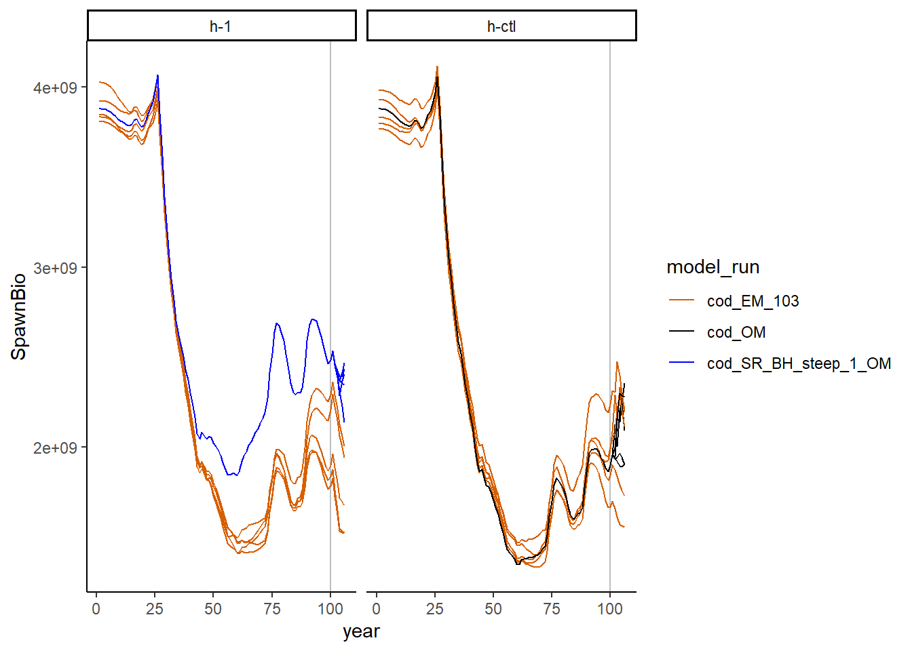

2 A simple example
We will start off exploring SSMSE by running a simple example.
Suppose we want to look at how well we are able to achieve a specified management procedure under uncertainty in the operating model (OM). We will look 2 scenarios, one where Steepness (h) is specified correctly and one where it is specified incorrectly in an estimation model (EM):
Scenario 1. h-ctl: Cod operating model (h = 0.65) with correctly specified cod model EM (fixed h = 0.65). The OM is the same as the EM.
Scenario 2. h-1: Cod operating model (h = 1) with misspecified cod model EM (fixed h = 0.65); The OM is not the same as the EM.
Note that this is a simple example where the OM and EM structures for both scenarios are identical, except for different steepness between the OM and EM in scenario 2. We will assume we want to run the MSE loop for 6 years, with a stock assessment occuring every 3 years (and forecasting catch to maintain 40% of unfished spawning stock biomass). The cod model’s last year is 100, so the OM is initially conditioned through year 100. Then, after conditioning the operating model through year 100, assessments will occur in years 100 and 103. The operating model runs through year 106. We chose not to run the assessment in year 106, as there was no need for its output in this example.
2.1 Setup R workspace folders
First, we will load the SSMSE package and create a folder in which to run the example:
Warning: replacing previous import 'vctrs::data_frame' by 'tibble::data_frame' when loading 'dplyr'library(r4ss) #install using remotes::install_github("r4ss/r4ss@development)
library(foreach) #if using run_parallel = TRUE
library(doParallel) #if using run_parallel = TRUELoading required package: iteratorsLoading required package: parallel2.2 Create the operating models (OMs)
The cod model with h = 0.65 (as in scenario 1) is included as external package data in SSMSE. However, we will need to modify it to use as an operating model with h = 1 (as in scenario 2). Note in this case that refit_OM is false, so the model is not being refit, just run through without fitting. To condition the new model on the same data as the input model, refit_OM should be TRUE.
First, we identify where the base cod model is stored, modify it such that the steepness parameter is 1, and save the modified cod OM for scenario 2 in a new folder in the run_SSMSE_dir directory.
cod_mod_path <- system.file("extdata", "models", "cod", package = "SSMSE")
# develop_OMs will save a model called "cod_SR_BH_steep_1" in the out_dir
# specified
develop_OMs(OM_name = "cod", out_dir = run_SSMSE_dir, par_name = "SR_BH_steep",
par_vals = 1, refit_OMs = FALSE, hess = FALSE)
# OM model for scenario 2
cod_1_path <- file.path(run_SSMSE_dir, "cod_SR_BH_steep_1")2.3 Examine the management procedure used
We will use the same management procedure for both scenarios:
- Conduct a stock assessment every 3 years to get stock status.
- Forecast from this stock assessment using the SS forecast file to get future catch.
- Put this forecasted catch (without implementation error, in the case of this example) back into the OM. Extend the OM forward in time to get the true values for the population.
Let’s take a look at step 2 in the management procedure, which is implemented using the forecasting module in SS. We will examine the forecast file for the estimation model to better understand how catches will be forecasted from the assessment. We will use the same management procedure in both of these scenarios, although for a full MSE analysis, it is likely that multiple management procedures would be compared.
fore <- r4ss::SS_readforecast(
system.file("extdata", "models", "cod", "forecast.ss", package = "SSMSE"),
verbose = FALSE)
fore$Forecast [1] 3[1] 0.4fore$Forecast = 3 means our forecasts from the assessment will use fishing mortality (F) to achieve a relative (to unfished) spawning stock biomass. Based on fore$Btarget, the relative biomass target is 40% of unfished spawning stock biomass. Note also that the control rule fore$BforconstantF and fore$BfornoF values are set low to make it unlikely that they will be used (these parameters are used for a ramp harvest control rule, which we do not want to use here):
[1] 0.03[1] 0.01Futhermore, fore$Flimitfraction is set to 1 so that the forecasted catch is set equal to the overfishing limit (for simplicity):
[1] 1Note that the number of forecast years is 1:
[1] 1However, an assessment will be conducted every 3 years and 3 years of forecasting is required. SSMSE will modify this value to the appropriate number of forecasting years.
More information on using the forecast module in SS to forecast catches is available in the Stock Synthesis users manual.
2.4 Adding observation error: Specify how to sample data from the Operating model (#sample)
The argument sample_struct() specifies the structure for sampling from the OM (and passing to the EM). The function create_sample_struct() can be used to construct a simple sampling structure consistent with an input data file:
datfile <- system.file("extdata", "models", "cod", "ss3.dat", package = "SSMSE")
sample_struct <- create_sample_struct(dat = datfile, nyrs = 6) # note warningWarning in FUN(X[[i]], ...): Pattern not found for lencomp: FltSvy 1, Seas 1. Returning NA for Yr in this dataframe.$catch
Yr Seas FltSvy SE
1 101 1 1 0.005
2 102 1 1 0.005
3 103 1 1 0.005
4 104 1 1 0.005
5 105 1 1 0.005
6 106 1 1 0.005
$CPUE
Yr Seas FltSvy SE
1 105 7 2 0.2
$lencomp
Yr Seas FltSvy Sex Part Nsamp
1 NA 1 1 0 0 125
$agecomp
Yr Seas FltSvy Sex Part Ageerr Lbin_lo Lbin_hi Nsamp
1 105 1 2 0 0 1 -1 -1 500By default, create_sample_struct() identifies sampling patterns from the historical period of the OM and replicates those patterns in the projection period. In our cod example, the sample structure specifies that catch will be added to the estimation model every year (years 101 to 106), but an index of abundance (i.e., CPUE) and age composition (i.e., agecomp) will only be added in year 105. We will use the same sampling scheme for both scenarios, but it is possible to specify different sampling for each scenario. The user could modify this sampling strategy (for example, maybe age composition should also be sampled from FltSvy 2 in Yr 102; the user could add another line to the dataframe in sample_struct$agecomp).
Note that length comp (lencomp) includes an NA value for year. This is because
no consistent pattern was identified, so the user must define their own input.
In this case, we will remove sampling length comps all together:
The same sampling structure will be used for both scenarios, which we define in a list below:
2.5 Adding process error through recruitment deviations
Process error can be added through the recruitment deviations. In this case, rec_dev_pattern = "rand" in the call to run_SSMSE() is used to use random recruitment deviations with the same standard deviation as the historical recruitment deviation pattern. Set scope = 2 so that the same recruitment deviation patterns are used across scenarios, but different patterns are use across iterations in the same scenario. For more information on the available options for rec_dev_pattern and scope please see the documentation for the run_SSMSE() function (?SSMSE::run_SSMSE()).
2.6 Run SSMSE
Now, we create a directory to store our results, and use run_SSMSE() to run the MSE analysis loop (note this will take some time to run, ~ 20 min):
run_res_path <- file.path(run_SSMSE_dir, "results")
dir.create(run_res_path)
run_SSMSE(scen_name_vec = c("h-ctl", "h-1"),# name of the scenario
out_dir_scen_vec = run_res_path, # directory in which to run the scenario
iter_vec = c(5,5), # run with 5 iterations each
OM_name_vec = NULL, # specify directories instead
OM_in_dir_vec = c(cod_mod_path, normalizePath(cod_1_path)), # OM files
EM_name_vec = c("cod", "cod"), # cod is included in package data
MS_vec = c("EM","EM"), # The management strategy is specified in the EM
use_SS_boot_vec = c(TRUE, TRUE), # use the SS bootstrap module for sampling
nyrs_vec = c(6, 6), # Years to project OM forward
nyrs_assess_vec = c(3, 3), # Years between assessments
rec_dev_pattern = "rand", # Use random recruitment devs
scope = "2", # to use the same recruitment devs across scenarios.
impl_error_pattern = "none", # Don't use implementation error
run_EM_last_yr = FALSE, # Run the EM in 106
run_parallel = TRUE, # Run iterations in parallel
sample_struct_list = sample_struct_list, # How to sample data for running the EM.
seed = 12345) #Set a fixed integer seed that allows replication See ?run_SSMSE() for more details on function arguments. In a real MSE analysis, running 100+ iterations to reflect the full range of uncertainty (given observation and process errors) in the results would be preferred. However, we are only running 5 iterations per scenario in this demonstration to reduce computing time.
2.7 run_SSMSE output
run_SSMSE() will create new folders in the folders specified in out_dir_scen_vec (note that in this case, we are running both scenarios in the same folder). After is complete, there will be a folder for each scenario in run_res_path (since out_dir_scen_vec = run_res_path in this example):
list.dirs(run_res_path, recursive = FALSE)
## [1] "run_SSMSE-ex/results/h-1" "run_SSMSE-ex/results/h-ctl"Within each scenario is a folder for each scenario:
# See folders for scenario 1.
list.dirs(file.path(run_res_path, "h-ctl"), recursive = FALSE)
## [1] "run_SSMSE-ex/results/h-ctl/1" "run_SSMSE-ex/results/h-ctl/2"
## [3] "run_SSMSE-ex/results/h-ctl/3" "run_SSMSE-ex/results/h-ctl/4"
## [5] "run_SSMSE-ex/results/h-ctl/5"And within each scenario folder, there are folders containing the SS models that were run by run_SSMSE().
# see folders for the first iteration of scenario 1
list.dirs(file.path(run_res_path, "h-ctl", "1"), recursive = FALSE)
## [1] "run_SSMSE-ex/results/h-ctl/1/cod_EM_103"
## [2] "run_SSMSE-ex/results/h-ctl/1/cod_EM_init"
## [3] "run_SSMSE-ex/results/h-ctl/1/cod_OM"There should be 1 folder for the OM, which is run multiple times in this same folder during the MSE analysis. There are multiple folders for the EMs, as a new folder is created each time an assessment is done. The first run is the folder with a name ending in init; then, each assessment after is named for the updated end year of the model.
With many iterations, the number of files adds up; in the future, we hope to add options to save less output.
2.8 Performance metrics
Quantitative performance metrics should be specified before conducting an MSE. Typically, a suite of performance metrics will be examined; however, for simplicity in this example, we will only look at what the achieved relative biomass was for the last 3 years of projection in the MSE to determine how it compares to the intended management target of 40% of unfished Spawning Stock Biomass. Note that we are only running our MSE projection for 6 years, but longer projections are typical in MSE analyses.
2.9 Summarize results
The function SSMSE_summary_all() can be used to summarize the model results in a list of 3 dataframes, one for scalar outputs (named scalar), one for timeseries outputs (ts), one for derived quantities (dq). This function also creates summary csv files in the folder where the results are stored.
# Summarize 1 iteration of output
summary <- SSMSE_summary_all(run_res_path)
## Extracting results from 2 scenarios
## Starting h-1 with 5 iterations
## Starting h-ctl with 5 iterationsPlotting and data manipulation can then be done with these summaries. For example, SSB over time by model can be plotted. The models include the Operating Model (cod_OM), Estimation model (EM) for the historical period of years 0-100 (cod_EM_init), and the EM run with last year of data in year 103 (cod_EM_103). The operating models are shown in blue or black (depending on the scenario), and the estimation model runs are shown in orange, and the scenarios are shown on different subplots:
library(ggplot2) # use install.packages("ggplot2") to install package if needed
library(tidyr) # use install.packages("tidyr") to install package if needed
library(dplyr) # use install.packages("dplyr") to install package if needed
Attaching package: 'dplyr'The following objects are masked from 'package:stats':
filter, lagThe following objects are masked from 'package:base':
intersect, setdiff, setequal, union# plot SSB by year and model run
ggplot2::ggplot(data = subset(summary$ts, model_run %in% c("cod_OM", "cod_SR_BH_steep_1_OM", "cod_EM_103")),
ggplot2::aes(x = year, y = SpawnBio)) +
ggplot2::geom_vline(xintercept = 100, color = "gray") +
ggplot2::geom_line(ggplot2::aes(linetype = as.character(iteration), color = model_run))+
ggplot2::scale_color_manual(values = c("#D65F00", "black", "blue")) +
ggplot2::scale_linetype_manual(values = rep("solid", 50)) +
ggplot2::guides(linetype = FALSE) +
ggplot2::facet_wrap(. ~ scenario) +
ggplot2::theme_classic() This plot shows that SSB estimated does not match perfectly with the operating model. A similar plot could be made for anu parameter of interest.
Now, we calculate and plot the performance metric.
# The get_rel_SSB_avg calculates the relative SSB in each year for each
# iteration of the operating model, then takes the average over the years from
# min_yr, to max_year. It uses the summary object as input to do these
# calculations.
get_rel_SSB_avg <- function(summary, min_yr, max_yr) {
# Get just the result for the OMs and not for the EMs.
OM_vals <- unique(summary$ts$model_run)
OM_vals <- grep("_OM$", OM_vals, value = TRUE)
# find the unfished biomass fr the OMs
B_unfished <- summary$scalar %>%
filter(model_run %in% OM_vals) %>%
select(iteration, scenario,SSB_Unfished)
# find the spawning stock biomass for the years of interest
SSB_yr <- summary$ts %>%
filter(year >= min_yr & year <= max_yr) %>%
select(iteration, scenario, year, SpawnBio)
# Calculated the relative spawning stock biomass using B_unfished and SSB_yr
# dataframes, then take an average over years.
SSB_yr <- left_join(SSB_yr, B_unfished) %>%
mutate(Rel_SSB = SpawnBio/SSB_Unfished) %>%
group_by(iteration, scenario) %>%
summarize(avg_SSB = mean(Rel_SSB), .groups = "keep") %>%
ungroup()
SSB_yr # return SSB averaged over yrs for each iteration and each scenario.
}
rel_SSB <- get_rel_SSB_avg(summary, min_yr = 104, max_yr = 106)Joining, by = c("iteration", "scenario")# function to summarize data in plot
data_summary <- function(x) {
m <- mean(x)
ymin <- m - sd(x)
ymax <- m + sd(x)
return(c(y = m, ymin = ymin, ymax = ymax))
}
# Now, plot the average relative spawning stock biomass for years 104 - 106
ggplot(data = rel_SSB, aes(x = scenario, y = avg_SSB)) +
geom_hline(yintercept = 0.4, color = "gray") +
stat_summary(fun.data = data_summary,
position = position_dodge(width = 0.9), color = "blue") +
scale_y_continuous(limits = c(0, 0.8)) +
labs(title = "Long-term average relative SSB\n(years 104-106)",
x = "Scenario", y = "SSB/SSB_unfished") +
theme_classic()
From the above plot, we see that the realized Spawning stock Biomass is higher than the target that was intended for both scenarios.
2.10 Example MSE Results
We can see from the performance metric that mis-specifying the value of steepness will results in higher realized relative spawning stock biomass than correctly specifying it. This gives us some idea of the consequences of misspecifying steepness in the stock assessment.
2.11 Delete the files
If you wish to delete the files created from this example, you can use: